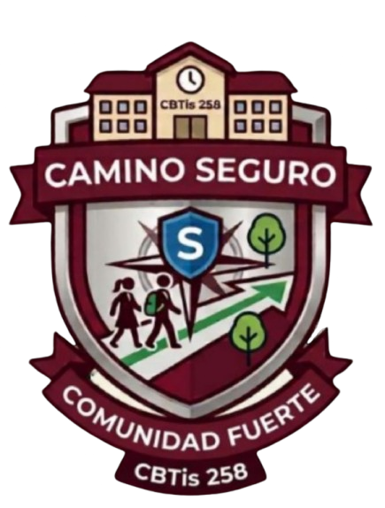

¿Qué es PAEC?
PAEC significa Programa Aula, Escuela y Comunidad. Es una estrategia educativa de la educación media superior en México vinculada a la Nueva Escuela Mexicana (NEM) y al Marco Curricular Común (MCCEMS).
Programa Aula, Escuela y Comunidad.

PAEC significa Programa Aula, Escuela y Comunidad. Es una estrategia educativa de la educación media superior en México vinculada a la Nueva Escuela Mexicana (NEM) y al Marco Curricular Común (MCCEMS).
Implementar estrategias integrales de coordinación y vinculación interinstitucional con las autoridades competentes, la participación comunitaria a fin de mitigar la inseguridad , el acoso y los factores de riesgo en las rutas de trayecto escolar, con el fin de salvaguardar la integridad física y socioemocional de los 2,893 estudiantes, favoreciendo así su rendimiento académico, permanencia y bienestar integral.

Aquí puedes encontrar información sobre las rutas más seguras para desplazarte desde y hacia el CBTis 258.